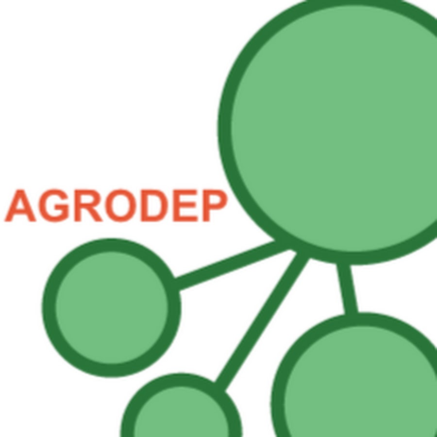
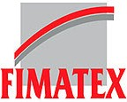

t.me/mbacou
linkedin.com/in/mbacou
github.com/mbacou
orcid.org/0000-0003-1810-6818
Top Skills
Cost/benefit analysis
Economic impact evaluation
Spatial econometrics
Agrometeorology
Weather risk and adaptation
Parametric risk transfer
R, STATA, QGIS
Languages
French (native)
English (bilingual)
German (limited working)
Russian (beginner)
Certifications
Summary
Applied economist with a focus on agricultural policies, small-holder farming systems, climate risk and adaptation strategies, monitoring & evaluation of development assistance programs.
Led research grants in the $500K range, advised public agencies with large-scale data collection methods (incl. remote sensing), household survey design and analysis, market segmentation, agricultural value-chain analysis, pricing of (parametric) weather insurance.
Strong quantitative, analytic, writing and presentation skills acquired over 20 years of collaboration with leading economic research institutes and consulting firms.
Multidisciplinary background with ability to communicate efficiently with government officials, private sector partners, technical experts, and researchers.
Work experience in fragile states (Mid-East, West/sub-Saharan Africa). French / U.S. citizenships.
Specialties
Quantitative and spatial analysis, cost/benefit analysis, household surveys and experimental designs, market segmentation, development of agricultural value chains, risk and impact evaluation methods, weather & climate risk and adaptation, parametric risk transfer, data visualization.
Stats: R, R/Shiny, STATA, SAS, Tableau®, Highcharts.js, D3.js
Databases: MS SQL Server, MySQL, PostGIS, MongoDB, Elasticsearch
GIS: QGIS, GRASS, GDAL, GeoServer, Mapnik, Leaflet, Kepler.gl
DevOps: CentOS, Ubuntu, AWS/Azure clouds, Docker
Agile development: Jira, Trello, Asana, Taiga.io, ClubHouse
Experience
International Water Management Institute (IWMI)
Porto, Portugal
Aug 2021 – Jan 2022
6 months
Scientific Modeling and Visualization (contract)
Designed complex ETLs and interactive tools to track changes in water budgets and water productivity across multiple river basins. Part of FAO Water Secure Africa initiative (WASA) to inform equitable and sustainable water use policies.
WorldCover PBC
Washington DC
Tamale, Ghana
Kampala, Tanzania
Aug 2017 – Apr 2021
3 years 9 months
Head of Research
WorldCover engineers solutions to better design, target, and deliver affordable (parametric) weather insurance to small-scale farmers (Ghana, Togo, Kenya, Uganda), and to large-scale fruit and nut tree growers, and to protect entire agricultural value chains against climate risks. Led agrometeorological research across 20 value-chains and agroclimatic zones. Rolled out a real-time pricing engine and multiple APIs on AWS cloud. (technical platform acquired in April 2021).
Bill & Melinda Gates Foundation (BMGF)

Washington DC
Seattle WA
Apr 2017 – Dec 2017
9 months
Agricultural Economist (contract)
Business-oriented typologies and characterization of small-holder farming systems in Ghana, Ethiopia, Tanzania, and Nigeria. Under a work assignment with Spatial Development International (now Locana).
Abt Associates Inc.

Washington DC
Jun 2017 – Jul 2017
2 months
Geospatial Analyst (contract)
Geospatial analysis to support USAID AgResults program evaluation in Nigeria, Kenya, and Uganda.
International Food Policy Research Institute (IFPRI)
Washington DC
Sep 2014 – Dec 2016
2 years 4 months
Snr. Program Manager
Generated subnational socio-economic and biophysical datasets to inform and upscale agricultural research investments in sub-Saharan Africa, track adoption of new agricultural technologies, track CGIAR research investments around the globe, and monitor the impact of policies and investments on small farm-holder livelihoods.
IFPRI – HarvestChoice Program

Washington DC
May 2010 – Aug 2014
4 years 4 months
Agricultural Economist
Research, data and analytics in support of the Global Development Program of the Bill & Melinda Gates Foundation, USAID Feed the Future Africa RISING, the G-8 New Alliance for Food Security and Nutrition, the Alliance for a Green Revolution in Africa (AGRA), and several CGIAR programs focused on agricultural productivity improvement, food security, and poverty reduction in sub-Saharan Africa. In charge of HarvestChoice data releases.
IFPRI – AGRODEP Program

Washington DC
Dakar, Senegal
May 2011 – Oct 2011
6 months
Instructor / Web Developer
The African Growth and Development Policy Modeling Consortium is a program sponsored by USAID / UKAid. Website migration to a Drupal CMS, incl. preparation of design mockups, content migration, and training of AGRODEP staff. Held a 3-day workshop on household survey data sampling and processing to AGRODEP awardees in Dakar, Senegal.
Bill & Melinda Gates Foundation (BMGF)
Washington DC
Seattle WA
Nov 2012 – Sep 2014
1 year 11 months
Agricultural Economist (contract)
Country diagnostics, segmentation of farm households, and data visualization for the Foundation’s Agricultural Development Program. Under a work assignment with Spatial Development International (now Locana).
African Development Bank

Tunis, Tunisia
Oct 2008 – Jan 2009
4 months
Team Lead - Procurement (contract)
Led a 4-month ICT project for the Bank’s Procurement and Fiduciary Services division aimed at a complete upgrade of its internal SAP® modules (procurement workflow and reporting tools) and external Web portal (procurement tools and information for borrowing governments and the business community). Under a work assignment with Crown Agents UK.
Development Gateway Foundation

Washington DC
May 2008 – Sep 2008
5 months
Monitoring & Evaluation of ICT Programs (contract)
Helped conduct a 5-month evaluation of the relevance, effectiveness and impact, sustainability, governance and management structure of DGF (5 international programs and staff of 84). The evaluation was forward-looking and provided substantial strategic recommendations to DGF in the areas of ICT4D and aid effectiveness. Data collection included desk review, on-line surveys, usage analysis from DGF servers, phone and in-person stakeholder interviews with over 45 individuals. Under a work assignment with AMEX International.
Abt Associates Inc.
Washington DC
Sana’a, Yemen
Oct 2005 – Sep 2007
2 years
Senior Analyst
Managed environmental cost-benefit and regulatory analyses, and program evaluations for the U.S. EPA Office of Air Quality and Office of Pesticide Programs (multi-year $200K-$500K task orders). Advised and led digital solutions for USAID, MCC, and WTO-funded projects. Supervised analysts, designers, and content experts:
- USAID Global Business, Trade & Investment Services IQC, gbti2.info.
- USAID Health Systems 20/20, Yemen, mophp-ye.org. Trained the Yemen Ministry of Health on ICT policy and strategy.
- Health Systems Action Network (HSAN), hsanet.org.
- U.S. EPA Office of Emergency Management, epa.gov/emergencies/. 8-month support to OEM Evaluation and Communication Division on information design.
Center for Global Trade Analysis (GTAP)

West Lafayette IN
2001 – 2005
4 years
ICT and Data Specialist
- Coordinated all distance learning activities on Computable General Equilibrium modeling
- Administered Web and database servers in support of the GTAP Network (over 8,000 researchers in 110 countries)
- Carried out vendor reviews and supervised all aspects of website rollouts
- Built web-based tools to streamline conference organization
- Screened funding opportunities for the Center, prepared research proposals and progress reports
Landbouw Economisch Instituut – Wageningen UR (LEI)

Den Haag, The Netherlands
Jan 2000 – Aug 2000
8 months
Information Management Specialist (contract)
- Planned and coordinated a first on-line training program on horticultural systems between WUR and agricultural academies in China
- Delivered initial training of trainers to Dutch content experts
Purdue University – Dpt of Agricultural Economics

West Lafayette IN
Harare, Zimbabwe
Sep 1998 – Dec 1999
1 year 4 months
Research Assistant
- Webmaster and technical adviser for a 6-month distance learning project for the Zimbabwean Tariff Commission sponsored by the World Bank
- Developed distance learning programs focusing on General Equilibrium theories and applications, sponsored by the United Nations Economic Commission for Africa
- Designed all educational websites, multimedia content, and CD-ROMs.
Société Générale Emerging Europe Asset Management (SGEEAM)

London, UK
Jan 1996 – May 1996
5 months
Marketing and Technical Assistant
- Assisted the initial release of high-risk investment funds on Eastern European markets
- Performed ratio analysis and financial reporting (translation of Polish and Czech accounting standards into IAS)
- Built financial databases and automated reports to assist market analysts in monitoring daily fund performance.
FIMATEX S.A.

Paris, France
Jul 1995 – Oct 1995
4 months
Marketing and Sales Assistant
- Took part in a strategic diversification from commodity to index derivatives markets
- Negotiated new marketing partnerships with the financial press and software vendors
- Collaborated with traders to produce daily market reports on French MATIF and MONEP bond and index futures and options
- Designed first business website, see Fimatex (now Boursorama)
SEAT France S.A.

Cergy Pontoise, France
Jan 1995 – Apr 1995
4 months
Marketing and Sales Intern
Contributed to monthly promotional campaigns with advertising agencies and tracked all merchandising programs with SEAT auto dealers across France.
Education
Purdue University
West Lafayette IN
1997 – 2001
M.Sc. Agricultural Economics
Thesis: Economy-wide Effects of Climate Variability and Climate Prediction in Mozambique, under the supervision of Dr. Channing Arndt, awarded outstanding M.Sc. thesis
Activities: started and taught Purdue’s Argentine tango student organization
ESCP Europe

Paris, France
Oxford, UK
Berlin, Germany
1994 – 1997
Diplôme de Grande École de Commerce
Diplom-Kaufmann, MA International Management
Previously EAP (European Advanced Program) 3-year/3-country program.
Thesis: Agricultural Derivatives Markets – A Substitute to the Common Agricultural Policy Support Price Mechanisms
Lycée Louis-le-Grand

Paris, France
1992 – 1994
Classe Prépa HEC (2-year B.Sc. equivalent) business mathematics and statistics, contemporary history, philosophy.
Publications
Poverty, Land, and Climate in Africa South of the Sahara: an empirical analysis, International Food Policy Research Institute. Presented at CSAE 2016.
Dec 2016
view
CELL5M: A Geospatial Database of Agricultural Indicators for Africa South of the Sahara, F1000Research 2016, 5:2490.
Oct 2016
view
Subnational Socio-Economic Dataset Availability, Nature Climate Change 6:115-116. DOI: 10.1038/nclimate2842
Jan, 2016
view
Characterization of Smallholder Households in Ethiopia - A household level summary of the context of smallholder agricultural production, HarvestChoice, International Food Policy Research Institute.
Aug 2010
view
Technical Report on Ozone Exposure, Risk, and Impact Assessments for Vegetation, Prepared for the Office of Air Quality Planning and Standards, U.S. Environmental Protection Agency.
Jan 2007
view
Climate Forecasts in Mozambique: an Economic Perspective, in Karen L. O’Brien and Vogel, Coleen H. (eds.) Climate Forecasts in Southern Africa. Aldershot, U.K. Ashgate.
Apr 2005
view
Economy-Wide Effects of Climate Variability and Climate Prediction in Mozambique, American Journal of Agricultural Economics 82 (3) 750-754.
Aug 2000
view